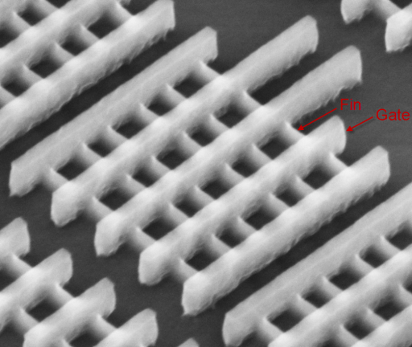

How A Computer Works
Table of Contents
1 Transistors
Learn It
- Transistors can come in many shapes and sizes.

- They all have something in common - three pins.
- The transistors we find in computer chips and memory are much smaller - 22nm to be exact which is 0.000000022m.

- The circuit diagram for a transistor is shown below, with the three pins labeled
Bfor Base,Cfor Collector andEfor Emitter.
- As mentioned in the previous lesson, a transistor can act like a switch. When there is current entering the Base(
B) of the transistor, current is allowed to flow through the Collector(C) to the Emitter(E).
Try It
- Have a play with the transistor below so you understand how applying a voltage to the base of a transistor is equivalent to turning on a switch.
2 Assessment
Badge It - Silver
- In your own words write up a description of how a transistor can act as a switch. Make sure you are using the words Collector, Base, and Emitter.
3 NAND Gates
Learn It
- We can combine transistors to make some pretty useful things. One combination of transistors is known as a NAND gate.
- A NAND gate is made from two transistors combined as shown below.
- The basic concept of this arrangement, is that if current can't flow through the collector and base of both resistors to Earth, then instead it will flow through the OUT.
- If both transistors allow current through their Collector and Emitter, then no current will flow through OUT.
- Have a play with the arrangement below and make sure you understand how the NAND gate works.
Badge It - Gold
- Below is a table showing the states that A and B can have, with a column left blank for the OUT (which has been labeled Q).
| A | B | Q |
|---|---|---|
| 0 | 0 | |
| 1 | 0 | |
| 0 | 1 | |
| 1 | 1 |
- Copy the table and complete the column labeled Q. (An input or output is ON (
1), if it current is flowing through it (red). - Now copy and fill in the missing spaces in the description below.
NAND GATES
NAND gates have two inputs (A and B) and an output (_). When A and B are both __, then Q is __. If either A or B are __ then Q is __. If A and B are both __ then Q is __.
Badge It - Platinum
- There is another arrangement of transistors that can produce a table as shown below.
| A | B | Q |
|---|---|---|
| 0 | 0 | 0 |
| 1 | 0 | 1 |
| 0 | 1 | 1 |
| 1 | 1 | 1 |
- Using any graphics package on your computer, try to draw the arrangement of transistors that would produce a table like this:
4 Assessment
Badge It - Gold
- Below is a table showing the possible:
5 Assessment
Badge It - Platinum
- Adding binary numbers is pretty much the same as adding denary numbers.
- 0 + 0 = 0
- 0 + 1 = 1
- 1 + 0 = 1
- 1 + 1 = 10 (or 0 and carry the 1)
- 1 + 1 + 1 = 11 (or 1 and carry the 1)
- Try performing the following additions:
- 100 + 11
- 100 + 100
- 100 + 1100
- 11001 + 10101